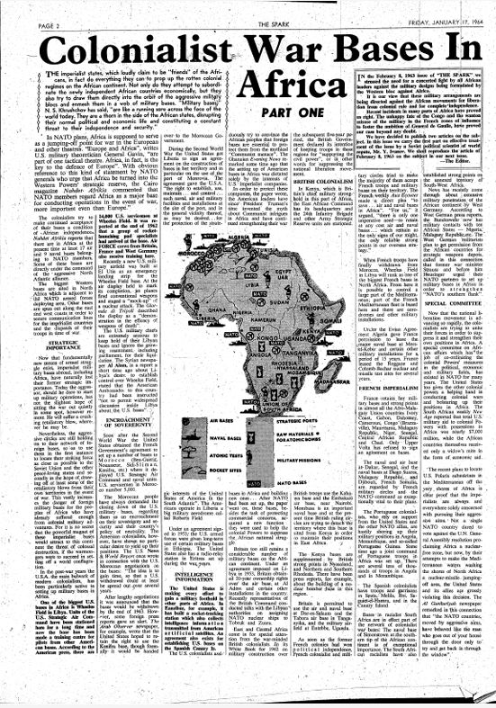
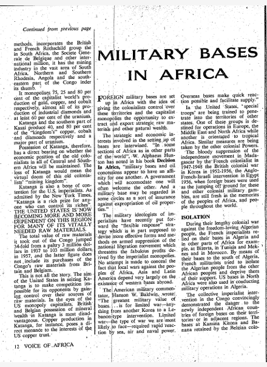
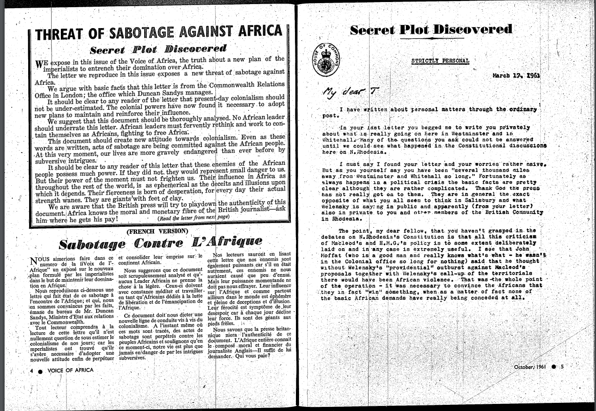
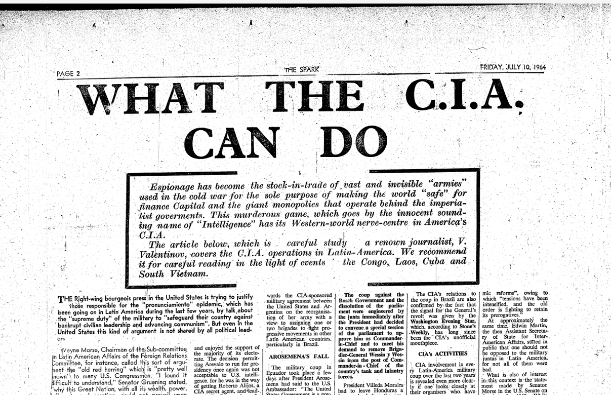
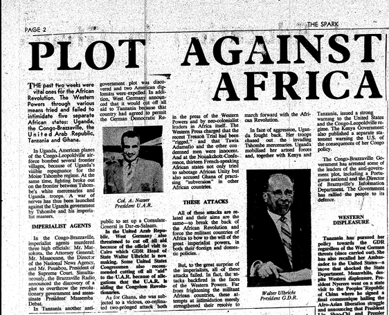

Le néocolonialisme militaire
L'arme des néocolonialistes
Dans le contexte de la décolonisation, la France conclut des ententes avec ses ex-colonies afin de s’assurer de maintenir une présence militaire dans son pré carré africain. En Afrique de l’Ouest, là où la France conserve des bastions militaires datant de la période coloniale, certains leaders dont Sékou Touré et Kwame Nkrumah, se questionnent sur la légitimité de cette présence militaire. À partir de sa présence militaire, la France organise des tentatives de déstabilisation de régimes qui ne lui sont pas favorables.

L'influence maintenue grâce à la présence et la pression militaire
Présence. La présence militaire: outil d'influence
La présence militaire constitue la première manifestation de la politique néocoloniale militaire. Grâce à cette présence, la mission d’influence est grandement facilitée. Précisément, les troupes et les infrastructures militaires deviennent un outil d’influence auprès des élites africaines. C’est d’ailleurs de cette manière dont Nkrumah identifie cette manifestation du néocolonialisme, comme quoi les forces armées stationnées par la France sur le territoire peuvent « contrôler le gouvernement ».
Le duo nationaliste affirme que la présence militaire poursuit une mission d’influence pour faciliter l’implantation du néocolonialisme et par le fait même, ne fait que susciter : « l’hostilité populaire à l’endroit des combinaisons néo-colonialistes ».
Nous pouvons tirer plusieurs interprétations sur la présence militaire française en Afrique de l’Ouest. Certains spécialistes croient que la présence militaire française est souhaitée chez les gouvernements africains qui demandent une forme de protection, mais auprès du peuple, nul ne doute que cette présence contribue à un sentiment de colère collectif et de désillusion quant à la réelle souveraineté du pays. Sékou Touré ajoute que le néocolonialisme militaire, par sa présence, cultive une culture de corruption qui mène ensuite à la désorganisation des nouveaux États-nations.
Il est certainement intéressant de voir comment Touré et Nkrumah entremêlent plusieurs concepts importants : la corruption des dirigeants africains, la désorganisation orchestrée par le néocolonialisme militaire, l’équilibre de l’unité des pays africains défié par la présence militaire. L’impression laissée aux lecteurs est celle d’une crainte quant à la portée du néocolonialisme militaire. D’autant plus que la présence militaire facilite la mission du néocolonialisme politique :
L’intention des colonisateurs est d’utiliser les nouveaux États africains ainsi circonscrits comme des marionnettes à travers lesquelles on peut étendre son influence sur des États dont l’indépendance est à l’égal de la souveraineté. La création de plusieurs États faibles et instables de ce genre en Afrique fera, espère-t-on, que ces territoires continueront de dépendre des anciennes Puissances colonisatrices, pour l’aide économique, et empêchera l’unité africaine de se réaliser.Kwame Nkrumah, l'Afrique doit s'unir, 1963, p.209.
À nouveau, notons quelques mots clés qui ressortent de la lexicologie des deux leaders socialistes : « marionnettes », « influence », « États faibles et instables », le tout intimement lié avec le défi de l’unité africaine. Dans la logique néocoloniale, les États « faibles et instables » demandent et dépendent de la présence militaire pour protéger le pouvoir favorable à la France. Selon Nkrumah, considérant que le néocolonialisme a été murement réfléchi avant même le début de la décolonisation, il n’est pas étonnant de constater de tels agissements : « avant de partir, elles [les puissances impérialistes] font des efforts surhumains pour créer des schismes et des rivalités qu’elles espèrent exploiter ensuite ». L’ex-colonisateur peut alors justifier le maintien de sa présence militaire, constatent les deux leaders.
L’historienne Camille Evrard apporte une nuance intéressante. Selon elle, contrairement à ce que Touré et Nkrumah estiment, le maintien de la présence n’est pas de facto une manifestation du néocolonialisme. Ce que le duo refuse de voir, ou simplement omet de considérer, c’est la lourde tâche d’assurer une transition d’un régime colonial à un État indépendant. L’Élysée peine à former des cadres militaires africains, ce qui nuit au processus de laisser une structure efficace en place pour les nouveaux États-nations et, par extension, explique la nécessité de la présence française.
Bien que la présence militaire joue un rôle en tant que manifestation du néocolonialisme puisqu’elle permet d’influencer et faciliter toutes missions néocoloniales, Evrard croit que cette présence est surtout, en premier lieu, pour des motifs logistiques. Toutefois, Evrard minimise l’importance, pour la France, de conserver son statut de puissance militaire moyenne. La présence militaire, pour les élites africaines, garantie une intervention possible de la France afin de protéger leur propre pouvoir. Inversement, les bases militaires et la présence de forces armées assurent de garder un semblant de rang de grande puissance en contexte de Guerre froide.
La discrétion, l'élément clé pour protéger les intérêts français
Conspiration : un symptôme de la présence néocoloniale
Le néocolonialisme militaire français se manifeste dans la politique de conspiration. Par définition, le terme conspirer signifie le fait d’ « organiser à plusieurs et dans le secret une action dont les motivations sont soit malveillantes, soit inspirées par un idéal ». C’est précisément l’exercice auquel se prête la France, notamment supporté par la politique d’intervention où l’Élysée organise diverses actions « secrètes » inspirées par un idéal, celui de maintenir son influence en Afrique. Ajoutons à cette définition l’étymologie du terme conspirer, en latin conspirare, qui se traduit par « s’accorder ». « S’accorder » n’est pas sans rappeler la définition du néocolonialisme, où il est essentiel que les élites et la puissance étrangère s’accordent ensemble pour mener à terme la mission néocoloniale. De plus, cela fait une référence directe à la conception touréenne sur le sujet : le Guinéen estime que les forces intérieures et extérieures travaillent ensemble contre le Peuple.
Dans les conceptions du duo Touré-Nkrumah, la conspiration s’entrevoit d’abord dans la présence du « complot permanent ». Loin d’être une invention du duo, la notion de « complot permanent » renvoie au phénomène observable dans toute révolution de nature socialiste, où un groupe particulier s’en prend aux forces révolutionnaires. Puisque Touré dit mener une révolution socialiste (et panafricaine) en Guinée, il est persuadé de la présence d'un « complot permanent ». Il associe ce complot à une conspiration organisée par la France. Afin d’illustrer la portée du complot permanent et les types d’opérations possibles, Touré cite l’évènement militaire marquant du 22 novembre 1970 durant lequel son pays a subi une attaque militaire du Portugal :
Le 22 novembre 1970, les colonialistes portugais, soutenus par l’impérialisme américain, ont envoyé sans vergogne des mercenaires lancer, tels des pirates, une attaque-surprise contre la République de Guinée, dans la vaine tentative de renverser d’un seul coup le gouvernement de la République de Guinée ayant à sa tête le Président Sékou Touré, et de replonger le Peuple guinéen dans l’abîme ténébreux de la domination colonialiste.Sékou Touré, L'agression portugaise contre la République de Guinée,1971, p.64-66.
Dans cette citation, nous voyons la manière dont Touré utilise dans un premier temps les nombreux acteurs en jeu. Dans ce même ouvrage, il cite la participation des « Européens et Africains », puis spécifie que les Américains jouent un rôle. Dans l’explication de cette conspiration contre la Guinée, Touré ajoute le nom du Portugal dans les fautifs puisqu'il « bénéficie de l’appui de l’impérialisme américain ». Ceci dévoile que la manifestation de la conspiration néocoloniale n’est pas uniquement au niveau national et loin d’être un conflit colonial, comme Nkrumah l’explique. Toujours dans une tentative de rendre légitime son propos concernant le néocolonialisme militaire et de la conspiration, Touré termine par son plus grand argument, la présence d’un ex-nazi en Guinée.
Après le coup de novembre 1970, Touré procède à des arrestations de masse. Parmi les gens arrêtés se trouve un ex-nazi, haut officier « SS-Sturmbannführer », Hermann Seibold. Selon Touré, Seibold occupait le rôle de :« spécialiste de la création de la 5ème colonne dans les pays visés par l’Allemagne nazie qui devait faciliter l’agression ouverte et la mise au pas de ces pays victimes du fascisme ». Via l’expertise de Seibold, de son vrai nom « Bruno Freitag » , l’Allemagne de l’Ouest prend part à la conspiration en Afrique, en tentant de déstabiliser les régimes qui refusent l’intrusion néocoloniale. Ce que Touré tente de présenter, grâce à l’exemple de Seibold, c’est l’extrême mesure à laquelle la France va pour mener à terme sa politique militaire de conspiration.
C’est sous cet angle que le duo voit la conspiration comme une facette sous-estimée de la présence militaire. Il serait dangereux de tergiverser dans une discussion quant à la véracité des conspirations. L’ancien diplomate et agent aux services de renseignements français, Maurice Robert, affirme que la France était bel et bien déterminée à :« déstabiliser Sékou Touré, le rendre vulnérable, impopulaire et faciliter la prise du pouvoir par l’opposition […] ». Dans le même ordre d’idée, l’historien Mohamed Saliou Camara mentionne que dès l’obtention de l’indépendance guinéenne, la France voit immédiatement Sékou Touré comme une cible à abattre. Toutefois, nous remarquons une limite significative dans la conception du duo quant à la manifestation de la politique de conspiration.
En effet, le duo semble faire abstraction du contexte général de la deuxième moitié du XXe siècle, c’est-à-dire la Guerre froide. Si le duo accuse la France d’organiser des conspirations contre la souveraineté des États africains, l’Élysée peut quant à elle accuser des pays socialistes de mener des complots pour faire « gagner » le socialisme soviétique en Afrique. Les historiens ont prouvé que les pays socialistes, comme le Ghana de Nkrumah et la Guinée de Touré, inquiètent les autorités françaises et les autres pays de l’Occident. Cette crainte n’est pas sans fondement, puisque Moscou mène une politique active d’influence en Afrique. Notamment, le Kremlin octroie un prêt de 140 millions de roubles à la Guinée entre novembre 1958 et février 1959, en plus d’offrir en cadeau des appareils radiophoniques capables de rejoindre les pays voisins. En étant bien consciente des talents d’orateurs de Touré, la France voit ceci d’un mauvais œil : le Guinéen pourrait en effet déstabiliser le pré carré français.
Conséquemment, tout ceci est loin d’entrer dans la lignée argumentative du duo. Nous croyons que le duo, constitué de deux habiles orateurs, réutilise le concept de conspiration pour le retourner contre la France, et ainsi minimiser leurs parts de responsabilités respectives dans la Guerre froide en Afrique. Dès lors, la conspiration semble devenir un mot-béquille tant pour la France que pour le Sékou Touré et Kwame Nkrumah, afin de lancer la part de responsabilité sur l’autre. Pour eux, la conspiration représente le moyen de mener la politique néocoloniale. Pour la France, la conspiration désigne davantage le jeu soviétique en Afrique.
Surveillance. Espionnage et autres tactiques de contrôle
Au tournant des années 1950, les services secrets français gagnent en importance. C’est dans ce contexte qu’émerge la quatrième manifestation du néocolonialisme militaire : la surveillance. Intimement liée avec l’espionnage, la surveillance joue un rôle clé pour la France, puisqu’elle permet de suivre les développements dans les États africains – amis comme ennemis. Notons qu’au tournant de la décolonisation, le Service de renseignement extérieur (SDECE) considère l’Afrique comme le plus grand atout de renseignement pour la France.
Devant les lois internationales, l’espionnage est un geste licite – or, dans les droits internes de chaque pays, l’espionnage est illégal. Voilà pourquoi Touré et Nkrumah estiment que l’espionnage est une manifestation directe du néocolonialisme militaire, puisque cela joue directement dans les zones grises – où la légalité et l’illégalité se chevauchent grâce à la « couverture » qu’offrent les accords de coopération, promettant la présence encore soutenue de la France en Afrique : « les anciens, partis par la grande porte, se sont réintroduits chez nous par la fenêtre et qu’ils demeurent chez nous sous la couverture d’assistants techniques, de coopérants, de militaires en casernes dans les bases encore présentes sur nos territoires […] ».
Sous Jacques Foccart, « Monsieur Afrique », une nouvelle pratique est mise sur pied : celle des « amazones » du SDECE, c'est-à-dire un réseau d’escortes attribué aux fonctionnaires, présidents et ministres africains. Ces femmes ne font pas que récolter des informations – elles sont aussi en mesure d’en extirper de manière plus radicale. Le cas le plus exemplaire est celui du Guinéen surnommé « Sily », un proche de Sékou Touré. L’histoire se déroule sur l’Orient-Express, où les documents policiers montrent que Sily est entrée dans le train avec une « ravissante autrichienne », mais cette dernière ne put être retrouvée après la découverte du corps inanimé de Sily, bas de nylons au cou et montrant des signes de résistance.
Dans la logique argumentative de Touré et Nkrumah, évoquer la surveillance comme manifestation du néocolonialisme est en réalité une tentative de compromettre la France devant la communauté internationale pour ses agissements « illégaux ». Car pour dénoncer et rendre illégal l’acte de surveillance et d’espionnage, un État doit prouver que « l'État-espionneur » a enfreint d’autres lois dans sa mission d’espionnage, ou bien limité le pouvoir souverain de l’État.
Afin de prouver le danger de la surveillance, Touré précise comment la France s’y prend : l’Élysée se sert du Peuple, de l’État et des moyens collectifs pour surveiller afin d’assurer son influence. Plus précisément, le Guinéen évoque l’exemple de la cinquième colonne – c’est-à-dire un rassemblement de « traitres » serviles à la cause d’une puissance étrangère. Premièrement lié avec la guerre d’Espagne de 1939, puis perfectionnée par l’Allemagne du IIIe Reich, Touré est convaincu que la surveillance, qui se manifeste par la présence d’une cinquième colonne, mène tôt ou tard à des opérations militaires. Le Guinéen affirme que :« l’Afrique de 1970-71, n’est pas l’Europe de 1939. La cinquième colonne africaine de l’impérialisme ne prospérera pas impunément en Afrique comme celle du fascisme à Madrid en 1939 ». En utilisant des exemples lourds de sens avec l’Espagne de 1939, la France de 1940 puis la Guinée lors du 22 novembre 1970, Touré veut convaincre ses comparses du réel danger qui se présente devant eux avec l’enjeu de la surveillance.
Cependant, une nuance doit être apportée quant à cette manifestation du néocolonialisme. À nouveau, le contexte de Guerre froide joue un rôle important dans la compréhension du versant militaire du néocolonialisme. Loin d’être uniquement tributaires des actions de la France, certains États africains vont eux-mêmes se diriger vers la France pour se protéger de l’Union soviétique, qui mène une politique d’influence beaucoup plus directe et agressive en Afrique. Bien que la France augmente ses missions de surveillance anticommuniste, il ne faut pas oublier que certains États africains demandent ces missions, aussi bien pour des raisons de sécurité que pour maintenir leurs pouvoirs personnels couverts sous la protection de la France.
Toutefois, cela ne cadre pas dans les conceptions de Touré et Nkrumah. D’autant plus, pour des leaders socialistes, il est difficile d’accepter que d’autres leaders africains puissent craindre l’Union soviétique. Ceci dit, la force des conceptions du néocolonialisme selon Sékou Touré et Kwame Nkrumah vient notamment dans la cohérence de leurs visions. Si les deux leaders reconnaissent des éléments plus nuancés, cela pourrait être perçu comme une incohérence, voire une faiblesse aux yeux de leurs compatriotes. C’est pour cette raison, nous croyons, que le duo peut parfois sembler ignorer des éléments importants à des fins idéologiques, mais également pratiques.
Les interventions de la France
Intervention : une projection dans le territoire africain. L'autorité par les accords de coopération
Après avoir subi la défaite dans le conflit colonial en Indochine (1946-1954) et en pleine guerre en Algérie (1954-1962), la France craint de voir d’autres conflits coloniaux surgir. En 1955, mené par l’Union des populations du Cameroun (UPC), le Cameroun fait craindre le pire à la France. Comme le souligne Thomas Deltombe, le Cameroun devient aussitôt le « laboratoire de la Françafrique », où l’Élysée modernise ses tactiques d’interventions. Bien que sanglant, le dénouement du conflit camerounais est positif pour la France. L’Élysée met au point la doctrine de la guerre révolutionnaire (DGR), accompagnée d’un modus operandi pour gérer les États africains ne lui étant pas favorables à l’avenir : 1. le recrutement d’un président fantoche 2. des interventions militaires conjointement liées avec de la propagande 3. armement offert aux forces armées locales 4. tout ceci étant géré par l’Élysée, à huis clos et loin des discussions parlementaires. En somme, de la guerre du Cameroun se révèle une nouvelle manifestation du néocolonialisme militaire : la politique d’intervention.

L’historien Walter Bruyère-Ostells mentionne que le néocolonialisme militaire français prend forme à travers ses interventions, tant terrestres qu’aériennes, de surveillance ou d’opérations clandestines. Cette manifestation est grave, selon Touré, puisqu’elle s’attaque directement aux légitimités des États africains et remet en cause « la souveraineté nationale et les perspectives d’émancipation des populations de certains de nos États africains ».
La politique d’intervention militaire de la France se perfectionne à travers les années suivant la décolonisation. La Mauritanie (1956-1963), le Tchad (1969-1972), le Zaïre (1978) et la Centrafrique (1979) sont devenus des « occasions » de perfectionnement des apprentissages datant du conflit camerounais. Parmi les plus grands bénéficiaires, le mercenaire « Bob Denard » devient l’ultime combattant pour le général Charles de Gaulle. Il possède un rôle crucial dans le succès de la politique d’intervention.
Tel que le tableau ci-présent l’illustre, la France multiplie les interventions rapides. Grâce aux accords de coopération militaire, elle s’assure d’un maillage stratégique facilitant les opérations militaires. Ce n’est pas sans rappeler les propos de Bourgi, à savoir qu'il existe des dispositions, dans le texte des accords de coopération, concernant le droit d'intervention en cas de pouvoir déstabilisé. Les États « amis » les réjouissent de voir ces dispositions régulièrement évoquées. Pour se permettre d’intervenir, la France a recours à un vocabulaire précis dans les accords de coopération militaire. Cela lui permet alors l’immixtion dans les conflits internes en Afrique.
Dans un autre ordre d’idée, le juriste Albert Bourgi croit d’ailleurs que les clauses secrètes des accords de coopération prévoient, sous certaines conditions, l’intervention de l’armée française pour protéger le chef d’État africain qui coopère avec la France, dans l’éventualité que son peuple se révolte contre celui-ci. Cela fait écho avec la conception touréenne de la politique d’intervention de la France. Selon lui, des pays comme le Sénégal de Senghor ou la Côte d’Ivoire de Houphouët-Boigny, joue un rôle indispensable pour le néocolonialisme militaire, en tant que pays « facilitateur » des interventions françaises. En réalité, les interventions militaires deviennent aussi une forme « d’assurance-vie » pour certains leaders sympathisants, comme Senghor et Houphouët-Boigny, où la France aide à réduire au silence les adversaires politiques et fournit des armes pour protéger les leaders proche de l'Élysée. Dictature ou non, tant que ces « amis » de la France sont fidèles aux intérêts français, Paris assure la protection du pouvoir.
Dans la conception nkroumaïste, la politique d’intervention de la France n’a pas de limites quant aux motifs de ses opérations, tant pour assurer des régimes amis que faire tomber des régimes ennemis ou bien simplement stabiliser ses intérêts en Afrique. En fait, l’Élysée intervient de plusieurs manières en Afrique : intervention directe avec des troupes ou indirecte avec des conseilleurs militaires, comme appui logistique et de soutien ou par des missions de renseignement dans le but de mener des interventions secrètes. Gourévitch affirme également que la non-intervention est une forme d’intervention de la France, dans le contexte où elle se donne le rôle de « grand frère » en Afrique pour protéger les États-nations. Lors d’un putsch, nous pouvons nous demander si l'intervention (ou la non-intervention) s'explique en fonction des intérêts de la France.
La dernière affirmation de Gourévitch est forte de sens. Cela témoigne de l’importance de la France dans les affaires africaines. D’autant plus, la puissance des États africains semble évoluer en corrélation directe avec la tolérance de la France.
Conclusion
Le maillage néocolonial militaire français est finement tissé : des six manifestations, nous pouvons les regrouper en trois groupes. La présence et les bases militaires forment d’abord la dimension la plus distincte. Au contraire, l’obscurité est le mot clé pour définir le second groupe, constitué de la politique de conspiration et de surveillance. Distincte, obscur et maintenant interventionniste : le troisième groupe représente la dimension réactive du néocolonialisme militaire, à travers la pérennisation et la politique active d’intervention.
Le duo postule des conceptions complémentaires sur le sujet. La présence militaire et les bases militaires sont des outils d’influence, de pression et de soutien pour les opérations néocoloniales de la France. La politique de conspiration et de surveillance se dévoile pour le duo dans les organisations de coups d’États et de déstabilisation organisé dans le secret par la France et par les missions d’espionnages françaises qui couvrent l’ensemble du continent. Finalement, grâce aux pouvoirs dont la France s’est munie avec les accords de défense, la politique de pérennisation et d’intervention représente le caractère d’adaptabilité du néocolonialisme militaire selon Touré et Nkrumah.
Fait intéressant, le duo ne fait pas qu’émettre leurs conceptions du néocolonialisme, mais propose des alternatives. Voici ce que Nkrumah propose pour se défendre du néocolonialisme militaire :
En second lieu, nous poursuivrions l’unification de notre stratégie militaire et de défense. […] Si nous ne nous unissons pas et ne combinons pas nos ressources militaires pour la défense commune, les États particuliers, se sentant en danger, risquent d’être entraînés à conclure des pactes avec des puissances étrangères, pactes qui nous mettront tout en danger.Kwame Nkrumah, L'Afrique doit s'unir, 1963, p.252.
Après notre analyse, nous avons bel et bien compris que le néocolonialisme militaire repose notamment sur les accords bilatéraux. Or, il est intéressant de voir que dans sa piste de solution, Nkrumah mentionne ce point comme étant un danger pour l’Afrique. Force est de constater que le Ghanéen était conséquent dans ses conceptions, de la critique aux solutions proposées.